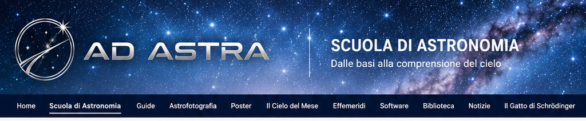

L'occhio non è una fotocamera
La visione umana è continua, adattiva e capace di percepire scene con forti differenze di luminosità. Un sensore, invece, registra quantitativamente la luce ricevuta entro una determinata gamma dinamica.

Fotografare il cielo significa raccogliere luce.
L'astrofotografia non consiste semplicemente nel puntare una fotocamera verso il cielo. Ogni immagine nasce dalla raccolta di un segnale estremamente debole, registrato da un sensore attraverso un sistema ottico, meccanico ed elettronico.
Comprendere come nasce quel segnale è il primo passo per capire esposizione, rumore, integrazione, calibrazione e successiva elaborazione.
Prima delle tecniche dedicate a Luna, Sole, pianeti, Via Lattea e cielo profondo, è quindi necessario comprendere che cosa stiamo realmente chiedendo ai nostri strumenti di registrare.
Prima di affrontare strumenti e tecniche di ripresa, è utile comprendere alcuni principi comuni a qualunque immagine astronomica.
La visione umana è continua, adattiva e capace di percepire scene con forti differenze di luminosità. Un sensore, invece, registra quantitativamente la luce ricevuta entro una determinata gamma dinamica.
Ottica, montatura, inseguimento, meccanica, sensore ed elettronica lavorano insieme. La qualità finale dipende dall'intera catena di acquisizione e non da un singolo componente.
La granulosità della pellicola e il rumore di un sensore digitale non sono lo stesso fenomeno fisico, ma l'analogia aiuta a comprendere perché un'immagine può apparire irregolare e perdere informazione fine.
Il sensore non vede il cielo come l'occhio: registra la luce che lo raggiunge. Tempo di esposizione, apertura, ISO o gain e caratteristiche del sensore determinano come quel segnale viene acquisito.
Come una parete nera richiede più mani di pittura bianca per diventare uniforme, più esposizioni permettono di consolidare il segnale utile rispetto alle fluttuazioni casuali, migliorando il rapporto segnale-rumore.
Il software può valorizzare l'informazione realmente acquisita, ma non può ricreare ciò che è stato perso. Fuoco errato, mosso, saturazione o dati insufficienti condizionano inevitabilmente le elaborazioni successive.
Dalle prime riprese con strumenti semplici fino all'acquisizione e all'elaborazione delle immagini astronomiche.
Luna, cielo stellato, modalità manuale, adattatori e possibilità offerte dai piccoli sensori dei dispositivi mobili.
Schede in preparazioneFotocamera, obiettivo, tempi di posa, focali e tecniche di base per fotografare il cielo mantenendo le stelle puntiformi.
Schede in preparazioneInseguimento del cielo, pose più lunghe, costellazioni, Via Lattea e grandi regioni del cielo riprese con focali contenute.
Schede in preparazioneFuoco diretto, focale, rapporto focale, campo inquadrato, campionamento e configurazione del treno ottico.
Schede in preparazioneTecniche dedicate agli oggetti più luminosi, singoli scatti, sequenze e mosaici. Per il Sole, osservazione e ripresa esclusivamente con filtrazione appropriata.
Schede in preparazioneAcquisizioni video ad alta frequenza, seeing, selezione dei fotogrammi, stacking e principi del lucky imaging.
Schede in preparazioneNebulose, galassie e ammassi: pose multiple, lunghe integrazioni, camere astronomiche, filtri, inseguimento e autoguida.
Schede in preparazioneNightscape, cielo e primo piano, esposizioni dedicate, panoramiche e costruzione dell'inquadratura tra paesaggio e cielo.
Schede in preparazioneLight, dark, flat, bias o dark-flat, esposizione, ISO, gain, temperatura, dithering e organizzazione dei dati di una sessione.
Schede in preparazioneSelezione, calibrazione, registrazione, stacking, stretching, colore, contrasto e riduzione del rumore: dal dato acquisito all'immagine elaborata.
Schede in preparazioneDalla luce proveniente dall'oggetto celeste fino all'immagine finale, ogni fase contribuisce alla costruzione del risultato.
Una buona elaborazione comincia durante l'acquisizione. Comprendere come viene raccolto il segnale permette di ottenere dati migliori e di utilizzare consapevolmente gli strumenti di elaborazione.